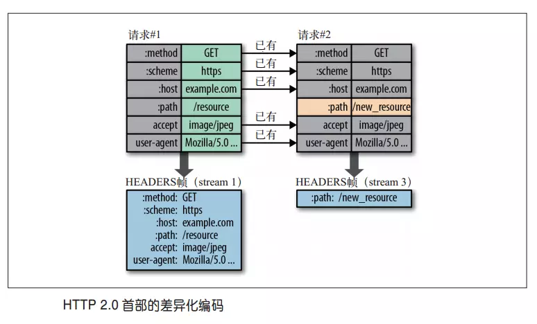

<!DOCTYPE html>
<html lang="zh-CN">
  <head>
    <meta charset="utf-8">
    <meta name="viewport" content="width=device-width,initial-scale=1">
    <title>http2 详情 | 小武子知识库</title>
    <meta name="description" content="用心，谈技术。大前端">
    <link rel="icon" href="/hero.jpeg">
    
    <link rel="preload" href="/assets/css/0.styles.3b39be88.css" as="style"><link rel="preload" href="/assets/js/app.3254aa49.js" as="script"><link rel="preload" href="/assets/js/2.bef15829.js" as="script"><link rel="preload" href="/assets/js/27.8b18fc4f.js" as="script"><link rel="preload" href="/assets/js/3.778dffbf.js" as="script"><link rel="prefetch" href="/assets/js/10.bbfb7d08.js"><link rel="prefetch" href="/assets/js/100.be8bbd61.js"><link rel="prefetch" href="/assets/js/101.4d345440.js"><link rel="prefetch" href="/assets/js/102.5ff41b8e.js"><link rel="prefetch" href="/assets/js/103.051f45d8.js"><link rel="prefetch" href="/assets/js/104.fb0b0be0.js"><link rel="prefetch" href="/assets/js/105.7081d888.js"><link rel="prefetch" href="/assets/js/106.ebc6c619.js"><link rel="prefetch" href="/assets/js/107.1b575e71.js"><link rel="prefetch" href="/assets/js/108.f279da14.js"><link rel="prefetch" href="/assets/js/109.fce01a37.js"><link rel="prefetch" href="/assets/js/11.4f56f550.js"><link rel="prefetch" href="/assets/js/110.8efaf7db.js"><link rel="prefetch" href="/assets/js/111.3c7fa617.js"><link rel="prefetch" href="/assets/js/112.d0b5e8e0.js"><link rel="prefetch" href="/assets/js/113.083f5ed5.js"><link rel="prefetch" href="/assets/js/114.02c44775.js"><link rel="prefetch" href="/assets/js/115.885e1fb3.js"><link rel="prefetch" href="/assets/js/116.540dbad9.js"><link rel="prefetch" href="/assets/js/117.ca3d8a89.js"><link rel="prefetch" href="/assets/js/118.6cf715ac.js"><link rel="prefetch" href="/assets/js/119.d86e810a.js"><link rel="prefetch" href="/assets/js/12.39a7d889.js"><link rel="prefetch" href="/assets/js/120.77ec0885.js"><link rel="prefetch" href="/assets/js/121.c398fe5e.js"><link rel="prefetch" href="/assets/js/122.e480d1fa.js"><link rel="prefetch" href="/assets/js/123.5bce6e5c.js"><link rel="prefetch" href="/assets/js/124.b2e4168f.js"><link rel="prefetch" href="/assets/js/125.10fb0593.js"><link rel="prefetch" href="/assets/js/126.9f07cb65.js"><link rel="prefetch" href="/assets/js/127.5b7ff323.js"><link rel="prefetch" href="/assets/js/128.6f3a42cd.js"><link rel="prefetch" href="/assets/js/129.db8225ff.js"><link rel="prefetch" href="/assets/js/13.93379687.js"><link rel="prefetch" href="/assets/js/130.2f3ca69c.js"><link rel="prefetch" href="/assets/js/131.48aef6fc.js"><link rel="prefetch" href="/assets/js/132.51ef74ca.js"><link rel="prefetch" href="/assets/js/133.34ef046d.js"><link rel="prefetch" href="/assets/js/134.bff3ecf1.js"><link rel="prefetch" href="/assets/js/135.9642f77f.js"><link rel="prefetch" href="/assets/js/136.db028117.js"><link rel="prefetch" href="/assets/js/137.7c73d9a4.js"><link rel="prefetch" href="/assets/js/138.1bdf4005.js"><link rel="prefetch" href="/assets/js/139.df0a9528.js"><link rel="prefetch" href="/assets/js/14.096e808c.js"><link rel="prefetch" href="/assets/js/140.aefe8d86.js"><link rel="prefetch" href="/assets/js/141.86201039.js"><link rel="prefetch" href="/assets/js/142.d8c14c99.js"><link rel="prefetch" href="/assets/js/143.d0d35a31.js"><link rel="prefetch" href="/assets/js/144.91fc7e9e.js"><link rel="prefetch" href="/assets/js/145.f7b6b074.js"><link rel="prefetch" href="/assets/js/146.6e35e73a.js"><link rel="prefetch" href="/assets/js/147.56cead20.js"><link rel="prefetch" href="/assets/js/148.572a3cac.js"><link rel="prefetch" href="/assets/js/149.6155d421.js"><link rel="prefetch" href="/assets/js/15.c4f256a6.js"><link rel="prefetch" href="/assets/js/150.b5d6d56f.js"><link rel="prefetch" href="/assets/js/151.f06f7923.js"><link rel="prefetch" href="/assets/js/152.1e7cae06.js"><link rel="prefetch" href="/assets/js/153.fc6646bf.js"><link rel="prefetch" href="/assets/js/154.e675cb8d.js"><link rel="prefetch" href="/assets/js/155.bde318e4.js"><link rel="prefetch" href="/assets/js/156.0119eba7.js"><link rel="prefetch" href="/assets/js/157.c6907e62.js"><link rel="prefetch" href="/assets/js/158.fec8e005.js"><link rel="prefetch" href="/assets/js/159.b6294f95.js"><link rel="prefetch" href="/assets/js/16.0dfad476.js"><link rel="prefetch" href="/assets/js/160.744aeb55.js"><link rel="prefetch" href="/assets/js/161.32950987.js"><link rel="prefetch" href="/assets/js/162.ed283877.js"><link rel="prefetch" href="/assets/js/163.abaddbfd.js"><link rel="prefetch" href="/assets/js/164.e03999bb.js"><link rel="prefetch" href="/assets/js/165.e43e2521.js"><link rel="prefetch" href="/assets/js/166.b1ca60ff.js"><link rel="prefetch" href="/assets/js/167.0faac4e2.js"><link rel="prefetch" href="/assets/js/168.249bc5c2.js"><link rel="prefetch" href="/assets/js/169.9e5bb3e9.js"><link rel="prefetch" href="/assets/js/17.62e30974.js"><link rel="prefetch" href="/assets/js/170.f02ef4ff.js"><link rel="prefetch" href="/assets/js/171.fef98363.js"><link rel="prefetch" href="/assets/js/172.866f4122.js"><link rel="prefetch" href="/assets/js/173.cb24c22f.js"><link rel="prefetch" href="/assets/js/174.e3cacc08.js"><link rel="prefetch" href="/assets/js/175.80a5301e.js"><link rel="prefetch" href="/assets/js/176.61d3fe73.js"><link rel="prefetch" href="/assets/js/177.8699e5c9.js"><link rel="prefetch" href="/assets/js/178.65da0095.js"><link rel="prefetch" href="/assets/js/179.77daac24.js"><link rel="prefetch" href="/assets/js/18.00f90488.js"><link rel="prefetch" href="/assets/js/180.07dd858c.js"><link rel="prefetch" href="/assets/js/181.0aaa3a3f.js"><link rel="prefetch" href="/assets/js/182.76407802.js"><link rel="prefetch" href="/assets/js/183.43f084a0.js"><link rel="prefetch" href="/assets/js/184.aa00dfe8.js"><link rel="prefetch" href="/assets/js/19.6e9ce129.js"><link rel="prefetch" href="/assets/js/20.af5f478c.js"><link rel="prefetch" href="/assets/js/21.e0ef460c.js"><link rel="prefetch" href="/assets/js/22.9f2bf7a6.js"><link rel="prefetch" href="/assets/js/23.07db5c8d.js"><link rel="prefetch" href="/assets/js/24.99d1a1cc.js"><link rel="prefetch" href="/assets/js/25.ba0f7b43.js"><link rel="prefetch" href="/assets/js/26.70830775.js"><link rel="prefetch" href="/assets/js/28.d88d477f.js"><link rel="prefetch" href="/assets/js/29.e1059a15.js"><link rel="prefetch" href="/assets/js/30.bfa3f894.js"><link rel="prefetch" href="/assets/js/31.715d56b0.js"><link rel="prefetch" href="/assets/js/32.ef578ebd.js"><link rel="prefetch" href="/assets/js/33.79ed9d50.js"><link rel="prefetch" href="/assets/js/34.eeb22c77.js"><link rel="prefetch" href="/assets/js/35.e3e078dd.js"><link rel="prefetch" href="/assets/js/36.71614057.js"><link rel="prefetch" href="/assets/js/37.46cee8fd.js"><link rel="prefetch" href="/assets/js/38.ff517728.js"><link rel="prefetch" href="/assets/js/39.75cb3b93.js"><link rel="prefetch" href="/assets/js/4.7bebcecd.js"><link rel="prefetch" href="/assets/js/40.1a7bb65f.js"><link rel="prefetch" href="/assets/js/41.32fc7661.js"><link rel="prefetch" href="/assets/js/42.f17be651.js"><link rel="prefetch" href="/assets/js/43.b8e6b003.js"><link rel="prefetch" href="/assets/js/44.63e040b0.js"><link rel="prefetch" href="/assets/js/45.9cf6546b.js"><link rel="prefetch" href="/assets/js/46.bac38fea.js"><link rel="prefetch" href="/assets/js/47.3326f9b7.js"><link rel="prefetch" href="/assets/js/48.89e886fa.js"><link rel="prefetch" href="/assets/js/49.5cf1bce7.js"><link rel="prefetch" href="/assets/js/5.1c2c7a5a.js"><link rel="prefetch" href="/assets/js/50.cd048e67.js"><link rel="prefetch" href="/assets/js/51.6f2d2919.js"><link rel="prefetch" href="/assets/js/52.e0d56a8d.js"><link rel="prefetch" href="/assets/js/53.e913f957.js"><link rel="prefetch" href="/assets/js/54.e73d1651.js"><link rel="prefetch" href="/assets/js/55.df1c9f9c.js"><link rel="prefetch" href="/assets/js/56.2478e04c.js"><link rel="prefetch" href="/assets/js/57.71c6a081.js"><link rel="prefetch" href="/assets/js/58.4a747a61.js"><link rel="prefetch" href="/assets/js/59.143ac351.js"><link rel="prefetch" href="/assets/js/6.a262197c.js"><link rel="prefetch" href="/assets/js/60.36bc5b25.js"><link rel="prefetch" href="/assets/js/61.d6b29e37.js"><link rel="prefetch" href="/assets/js/62.ab59006b.js"><link rel="prefetch" href="/assets/js/63.19592c35.js"><link rel="prefetch" href="/assets/js/64.f7151b69.js"><link rel="prefetch" href="/assets/js/65.376509b5.js"><link rel="prefetch" href="/assets/js/66.d1c76852.js"><link rel="prefetch" href="/assets/js/67.f457c933.js"><link rel="prefetch" href="/assets/js/68.f5998957.js"><link rel="prefetch" href="/assets/js/69.581ea2f6.js"><link rel="prefetch" href="/assets/js/7.455ddaf6.js"><link rel="prefetch" href="/assets/js/70.02b557cd.js"><link rel="prefetch" href="/assets/js/71.8fa6d975.js"><link rel="prefetch" href="/assets/js/72.4764885f.js"><link rel="prefetch" href="/assets/js/73.5697b8f4.js"><link rel="prefetch" href="/assets/js/74.7854ba2e.js"><link rel="prefetch" href="/assets/js/75.6745e31d.js"><link rel="prefetch" href="/assets/js/76.2bd94747.js"><link rel="prefetch" href="/assets/js/77.d27862a0.js"><link rel="prefetch" href="/assets/js/78.ef7d69ac.js"><link rel="prefetch" href="/assets/js/79.ba9c6377.js"><link rel="prefetch" href="/assets/js/8.47e53149.js"><link rel="prefetch" href="/assets/js/80.0460ec56.js"><link rel="prefetch" href="/assets/js/81.d3b50824.js"><link rel="prefetch" href="/assets/js/82.a2cb6190.js"><link rel="prefetch" href="/assets/js/83.a4add490.js"><link rel="prefetch" href="/assets/js/84.23abd9dd.js"><link rel="prefetch" href="/assets/js/85.220dc237.js"><link rel="prefetch" href="/assets/js/86.89010ff3.js"><link rel="prefetch" href="/assets/js/87.55dc7485.js"><link rel="prefetch" href="/assets/js/88.9a65e3b8.js"><link rel="prefetch" href="/assets/js/89.31adc973.js"><link rel="prefetch" href="/assets/js/9.8d6e7709.js"><link rel="prefetch" href="/assets/js/90.0a71298e.js"><link rel="prefetch" href="/assets/js/91.c6585900.js"><link rel="prefetch" href="/assets/js/92.c5606e46.js"><link rel="prefetch" href="/assets/js/93.512d16dc.js"><link rel="prefetch" href="/assets/js/94.0df86737.js"><link rel="prefetch" href="/assets/js/95.19444321.js"><link rel="prefetch" href="/assets/js/96.245b751d.js"><link rel="prefetch" href="/assets/js/97.9702258a.js"><link rel="prefetch" href="/assets/js/98.4e542de2.js"><link rel="prefetch" href="/assets/js/99.df660990.js">
    <link rel="stylesheet" href="/assets/css/0.styles.3b39be88.css">
  </head>
  <body>
    <div id="app" data-server-rendered="true"><div class="theme-container"><header class="navbar"><div class="sidebar-button"><svg xmlns="http://www.w3.org/2000/svg" aria-hidden="true" role="img" viewBox="0 0 448 512" class="icon"><path fill="currentColor" d="M436 124H12c-6.627 0-12-5.373-12-12V80c0-6.627 5.373-12 12-12h424c6.627 0 12 5.373 12 12v32c0 6.627-5.373 12-12 12zm0 160H12c-6.627 0-12-5.373-12-12v-32c0-6.627 5.373-12 12-12h424c6.627 0 12 5.373 12 12v32c0 6.627-5.373 12-12 12zm0 160H12c-6.627 0-12-5.373-12-12v-32c0-6.627 5.373-12 12-12h424c6.627 0 12 5.373 12 12v32c0 6.627-5.373 12-12 12z"></path></svg></div> <a href="/" class="home-link router-link-active"><!----> <span class="site-name">小武子知识库</span></a> <div class="links"><div class="search-box"><input aria-label="Search" autocomplete="off" spellcheck="false" value=""> <!----></div> <nav class="nav-links can-hide"><div class="nav-item"><a href="/" class="nav-link">首页</a></div><div class="nav-item"><a href="/js/" class="nav-link">javascript</a></div><div class="nav-item"><a href="/css/" class="nav-link">css</a></div><div class="nav-item"><a href="/html5/" class="nav-link">HTML5</a></div><div class="nav-item"><a href="/tool/" class="nav-link">工具</a></div><div class="nav-item"><a href="/project/" class="nav-link">软件工程</a></div><div class="nav-item"><a href="/cs/" class="nav-link router-link-active">计算机基础</a></div><div class="nav-item"><a href="/interview-question/" class="nav-link">面试</a></div><div class="nav-item"><a href="/materials/" class="nav-link">资料收集</a></div><div class="nav-item"><a href="/about/" class="nav-link">关于作者</a></div> <!----></nav></div></header> <div class="sidebar-mask"></div> <aside class="sidebar"><nav class="nav-links"><div class="nav-item"><a href="/" class="nav-link">首页</a></div><div class="nav-item"><a href="/js/" class="nav-link">javascript</a></div><div class="nav-item"><a href="/css/" class="nav-link">css</a></div><div class="nav-item"><a href="/html5/" class="nav-link">HTML5</a></div><div class="nav-item"><a href="/tool/" class="nav-link">工具</a></div><div class="nav-item"><a href="/project/" class="nav-link">软件工程</a></div><div class="nav-item"><a href="/cs/" class="nav-link router-link-active">计算机基础</a></div><div class="nav-item"><a href="/interview-question/" class="nav-link">面试</a></div><div class="nav-item"><a href="/materials/" class="nav-link">资料收集</a></div><div class="nav-item"><a href="/about/" class="nav-link">关于作者</a></div> <!----></nav>  <ul class="sidebar-links"><li><section class="sidebar-group depth-0"><p class="sidebar-heading"><span>数据结构</span> <!----></p> <ul class="sidebar-links sidebar-group-items"><li><a href="/cs/array.html" class="sidebar-link">数组</a></li><li><a href="/cs/list.html" class="sidebar-link">链表</a></li><li><a href="/cs/stack.html" class="sidebar-link">栈</a></li><li><a href="/cs/hash.html" class="sidebar-link">散列表</a></li><li><a href="/cs/trees.html" class="sidebar-link">树结构</a></li><li><a href="/cs/trie.html" class="sidebar-link">字典树</a></li><li><a href="/cs/queue.html" class="sidebar-link">队列</a></li></ul></section></li><li><section class="sidebar-group depth-0"><p class="sidebar-heading"><span>算法</span> <!----></p> <ul class="sidebar-links sidebar-group-items"><li><a href="/cs/base-sort.html" class="sidebar-link">简单排序</a></li><li><a href="/cs/base-select.html" class="sidebar-link">查找算法</a></li><li><a href="/cs/high-algorithm.html" class="sidebar-link">高级算法</a></li><li><a href="/cs/high-sort.html" class="sidebar-link">高级排序</a></li></ul></section></li><li><section class="sidebar-group depth-0"><p class="sidebar-heading"><span>设计模式</span> <!----></p> <ul class="sidebar-links sidebar-group-items"><li><a href="/cs/base-design-pattern.html" class="sidebar-link">设计模式六大原则</a></li><li><a href="/cs/design-pattern-create.html" class="sidebar-link">创建型设计模式</a></li><li><a href="/cs/design-pattern-structure.html" class="sidebar-link">结构型设计模式</a></li><li><a href="/cs/design-pattern-skill.html" class="sidebar-link">技巧型设计模式</a></li><li><a href="/cs/design-pattern-architecture.html" class="sidebar-link">架构型设计模式</a></li><li><a href="/cs/design-pattern-dependency.html" class="sidebar-link">你需要知道的依赖注入</a></li><li><a href="/cs/design-pattern-behavior.html" class="sidebar-link">行为型设计模式</a></li></ul></section></li><li><section class="sidebar-group depth-0"><p class="sidebar-heading"><span>函数数据编程</span> <!----></p> <ul class="sidebar-links sidebar-group-items"><li><a href="/cs/base-functional.html" class="sidebar-link">函数式编程</a></li></ul></section></li><li><section class="sidebar-group depth-0"><p class="sidebar-heading"><span>计算机组成原理</span> <!----></p> <ul class="sidebar-links sidebar-group-items"><li><a href="/cs/base-computer.html" class="sidebar-link">计算机组件原理</a></li></ul></section></li><li><section class="sidebar-group depth-0"><p class="sidebar-heading open"><span>网络</span> <!----></p> <ul class="sidebar-links sidebar-group-items"><li><a href="/cs/http.html" class="sidebar-link">http 详情</a></li><li><a href="/cs/https.html" class="sidebar-link">https 详情</a></li><li><a href="/cs/http2.html" class="active sidebar-link">http2 详情</a><ul class="sidebar-sub-headers"><li class="sidebar-sub-header"><a href="/cs/http2.html#前言" class="sidebar-link">前言</a></li><li class="sidebar-sub-header"><a href="/cs/http2.html#内容" class="sidebar-link">内容</a></li><li class="sidebar-sub-header"><a href="/cs/http2.html#联系作者" class="sidebar-link">联系作者</a></li></ul></li><li><a href="/cs/tcp.html" class="sidebar-link">TCP 与 UDP</a></li><li><a href="/cs/webstock.html" class="sidebar-link">webstock</a></li></ul></section></li><li><section class="sidebar-group depth-0"><p class="sidebar-heading"><span>操作系统</span> <!----></p> <ul class="sidebar-links sidebar-group-items"><li><a href="/cs/os.html" class="sidebar-link">操作系统</a></li><li><a href="/cs/linux.html" class="sidebar-link">linux 常用命令</a></li></ul></section></li></ul> </aside> <main class="page"> <div class="theme-default-content content__default"><h1 id="http2-详情"><a href="#http2-详情" aria-hidden="true" class="header-anchor">#</a> http2 详情</h1> <h2 id="前言"><a href="#前言" aria-hidden="true" class="header-anchor">#</a> 前言</h2> <p>本人平时学习及收集内容，欢迎参入一起讨论。</p> <h2 id="内容"><a href="#内容" aria-hidden="true" class="header-anchor">#</a> 内容</h2> <ul><li><a href="#%E4%B8%80%E3%80%81http%E5%8F%91%E5%B1%95%E5%8F%B2">http发展史</a></li> <li><a href="#%E4%BA%8C%E3%80%81http1.x%E5%AD%98%E5%9C%A8%E7%9A%84%E9%97%AE%E9%A2%98">http1.x存在的问题</a></li> <li><a href="#%E4%B8%89%E3%80%81HTTP2%E6%96%B0%E5%A2%9E%E5%8A%A0%E5%8A%9F%E8%83%BD">HTTP2新增加功能</a></li> <li><a href="#%E5%9B%9B%E3%80%81%E6%80%BB%E7%BB%93">总结</a></li> <li><a href="#%E4%BA%94%E3%80%81Nginx%E9%85%8D%E7%BD%AEhttp2">nginx配置HTTP2</a></li></ul> <h3 id="一、http发展史"><a href="#一、http发展史" aria-hidden="true" class="header-anchor">#</a> 一、http发展史</h3> <p></p> <h3 id="二、http1-x存在的问题"><a href="#二、http1-x存在的问题" aria-hidden="true" class="header-anchor">#</a> 二、http1.x存在的问题</h3> <ul><li>协议规定客户端对同一域的迸发连接最多只能2个（浏览器实现一般2~8个），但是现代网页平均一个页面需要加载40个资源。</li> <li>线头阻塞问题：同一个连接中的请求，需要一个接一个串行发送和接收</li> <li>基于文本协议，请求和响应的头信息非常大，并且无法压缩。</li> <li>不能控制响应优先级，必须按照请求顺序响应。</li> <li>只能单向请求，也就是客户端请求什么，服务器只能返回什么。</li></ul> <h3 id="三、http2新增加功能"><a href="#三、http2新增加功能" aria-hidden="true" class="header-anchor">#</a> 三、HTTP2新增加功能</h3> <ul><li>二进制分帧</li> <li>首部压缩</li> <li>http2支持服务器推送</li> <li>多路复用（Multiplexing）和流</li> <li>优先级与依赖性</li></ul> <h4 id="_3-1-二进制分帧"><a href="#_3-1-二进制分帧" aria-hidden="true" class="header-anchor">#</a> 3.1 二进制分帧</h4> <p>HTTP2在维持原有HTTP范式的前提下，实现突破性能限制，改进传输性能，实现低延迟和高吞吐量的其中一个关键是：**在应用层（HTTP2）和传输层（TCP or UDP）**之间增加了二进分帧层。
</p> <p>帧（Frame）是 HTTP2 通讯中的最小传输单位，所有帧以固定的 9 个八位字节头部开头，随后是一个可变长度的有效载荷</p> <div class="language- line-numbers-mode"><pre class="language-text"><code>帧结构图
 +-----------------------------------------------+
 |                 长度Length (24)                |
 +---------------+---------------+---------------+
 |   类型Type (8)    |   标志Flags (8)   |
 +-+-------------+---------------+-------------------------------+
 |R|                 流标识符Stream Identifier (31)               |
 +=+=============================================================+
 |                   帧载荷Frame Payload (0...)                 ...
 +---------------------------------------------------------------+

</code></pre> <div class="line-numbers-wrapper"><span class="line-number">1</span><br><span class="line-number">2</span><br><span class="line-number">3</span><br><span class="line-number">4</span><br><span class="line-number">5</span><br><span class="line-number">6</span><br><span class="line-number">7</span><br><span class="line-number">8</span><br><span class="line-number">9</span><br><span class="line-number">10</span><br><span class="line-number">11</span><br></div></div><p>规范中一共定义了10个不同的帧，其中最基础的两种分别对应于HTTP1.x 的 DATA 和 HEADERS。</p> <p>一个真正的HTTP2请求类似下图：</p> <p></p> <h4 id="_3-2-首部压缩"><a href="#_3-2-首部压缩" aria-hidden="true" class="header-anchor">#</a> 3.2 首部压缩</h4> <p>我们都知道<strong>HTTP协议本身是无状态</strong>的：每个请求之间<strong>互不关联</strong>，每个请求都需要携带服务器所需要的所有细节信息。比如说请求1发送服务器信息“我是用户A”，然后请求二发送信息“修改我的用户名为XX”，这时如果请求二没有携带“我是用户A”的信息，那么服务器是不知道要修改用户的用户名的。</p> <p>这显然是不符合当前 web 应用系统架构的，因为一般系统都需要进行鉴权，日志记录，安全校验等限制，所以需要获取当前操作用户的信息，出于安全和性能考虑我们不能在消息体中明文包含这些信息，HTTP2 之前的解决方案一般是使用 Cookies 头、服务器session 等方式模拟出“状态”。而使用 Cookies 头的缺点就是每个请求都需要携带庞大的重复的信息并且无法压缩，假设一个请求的 header 是2kb，那么一百个请求就是重复的 200Kb 信息，这是一个巨大的带宽浪费。</p> <p>HTTP2 增加了两个特性解决上述问题：</p> <ul><li><a href="https://link.juejin.im/?target=http%3A%2F%2Fhttp2.github.io%2Fhttp2-spec%2Fcompression.html" target="_blank" rel="noopener noreferrer">HPACK<svg xmlns="http://www.w3.org/2000/svg" aria-hidden="true" x="0px" y="0px" viewBox="0 0 100 100" width="15" height="15" class="icon outbound"><path fill="currentColor" d="M18.8,85.1h56l0,0c2.2,0,4-1.8,4-4v-32h-8v28h-48v-48h28v-8h-32l0,0c-2.2,0-4,1.8-4,4v56C14.8,83.3,16.6,85.1,18.8,85.1z"></path> <polygon fill="currentColor" points="45.7,48.7 51.3,54.3 77.2,28.5 77.2,37.2 85.2,37.2 85.2,14.9 62.8,14.9 62.8,22.9 71.5,22.9"></polygon></svg></a>，专门为头部压缩设计的算法，还被指定成单独的草案中。</li></ul> <p></p> <ul><li>首部表，HTTP2 在户端和服务器端使用“首部表”来跟踪和存储之前发送的键-值对，对于相同的数据，不再通过每次请求和响应发送；通信期间几乎不会改变的通用键-值对（用户代理、可接受的媒体类型，等等）只需发送一次。</li></ul> <p></p> <h4 id="_3-3-http2支持服务器推送"><a href="#_3-3-http2支持服务器推送" aria-hidden="true" class="header-anchor">#</a> 3.3 http2支持服务器推送</h4> <p>这个功能通常被称作“缓存推送（cache push）”。主要的思想是：当一个客户端请求资源X，而服务器知道它很可能也需要资源Z的情况下，服务器可以在客户端发送请求Z前，主动将资源Z推送给客户端。这个功能帮助客户端将Z放进缓存以备将来之需。
服务器推送需要客户端显式的允许服务器提供该功能。但即使如此，客户端依然能自主选择是否需要中断该推送的流。如果不需要的话，客户端可以通过发送一个 RST_STREAM 帧来中止推送。
我们来看一下实际场景：现在我们访问一个网站，第一个请求一般是获取 Document 页面，然后浏览器解析这个页面，在遇到需要资源获取的时候（css、js、图片等），再去发起资源获取请求，如下图：</p> <p></p> <p>为了加速这个过程，减少白屏时间，传统的做法是把首页需要的资源都内联到 Document 中，还有合并资源比如 CSS sprites，js 压缩合并等。如下图：</p> <p></p> <p>在 HTTP2 的场景下，客户端在请求 Document 的时候，服务器如果知道页面需要的资源有哪些，就可以把那些资源也一同返回了：</p> <p></p> <p>使用 HTTP2 的多路复用和服务器推送功能，并不意味着可以减少甚至抛弃使用 CDN，因为 CDN 带来的现实地理位置上延迟减少是 HTTP2 所不能解决的，反而我们应该思考的是如何把 HTTP2 和 CDN 结合起来，进一步提升网络服务的效率和稳定性，减少延迟。</p> <h4 id="_3-4-多路复用（multiplexing）和流"><a href="#_3-4-多路复用（multiplexing）和流" aria-hidden="true" class="header-anchor">#</a> 3.4 多路复用（Multiplexing）和流</h4> <blockquote><p>上一节提到的 Stream Identifier 将 HTTP2 连接上传输的每个帧都关联到一个“流”。流是一个独立的，双向的帧序列，可以通过一个 HTTP2 的连接在服务端与客户端之间不断的交换数据。
每个单独的 HTTP2 连接都可以包含多个并发的流，这些流中交错的包含着来自两端的帧。流既可以被客户端/服务器端单方面的建立和使用，也可以被双方共享，或者被任意一边关闭。在流里面，每一帧发送的顺序非常关键。接收方会按照收到帧的顺序来进行处理。</p></blockquote> <p>“流”是一个逻辑上的概念（没有真正传输流这么个东西），是 HTTP2 连接中在客户端和服务器之间交换的独立双向帧序列，这就是为什么在规范中的 stream 也是用双引号括起来的原因。从上一节我们可以知道，HTTP2 的传输单位是帧，流其实就是一个帧的分组集合的概念，为什么需要这个逻辑集合呢？答案就在多路复用。</p> <p>多路复用是解决 HTTP1.x 缺陷第一点（并发问题）和第二点（HOLB线头问题）的核心技术点。</p> <h4 id="_3-5-优先级与依赖性"><a href="#_3-5-优先级与依赖性" aria-hidden="true" class="header-anchor">#</a> 3.5 优先级与依赖性</h4> <p>每个流都包含一个优先级（也就是“权重”），它被用来告诉对端哪个流更重要。当资源有限的时候，服务器会根据优先级来选择应该先发送哪些流。</p> <p>借助于PRIORITY帧，客户端同样可以告知服务器当前的流依赖于其他哪个流。该功能让客户端能建立一个优先级“树”，所有“子流”会依赖于“父流”的传输完成情况。
优先级和依赖关系可以在传输过程中被动态的改变。这样当用户滚动一个全是图片的页面的时候，浏览器就能够指定哪个图片拥有更高的优先级。或者是在你切换标签页的时候，浏览器可以提升新切换到页面所包含流的优先级。</p> <h4 id="_3-6-浏览器与服务器已经对http2协议提供了支持"><a href="#_3-6-浏览器与服务器已经对http2协议提供了支持" aria-hidden="true" class="header-anchor">#</a> 3.6 浏览器与服务器已经对http2协议提供了支持</h4> <p></p> <h3 id="四、总结"><a href="#四、总结" aria-hidden="true" class="header-anchor">#</a> 四、总结</h3> <p>HTTP2能带来的好处：</p> <ol><li>更小的传输体积，更小或者省略重复的头消息</li> <li>突破原有的 TCP 连接并发限制，使用一个 TCP 连接即可实现多请求并发，单链接也能减轻服务端的压力（更少的内存和 CPU 使用）</li> <li>解决 HOLB 线头问题，慢的请求或者先发送的请求不会阻塞其他请求的返回</li> <li>结合 CDN 提供实时性更高，延迟更低的内容分发代理服务，大大减少白屏时间</li> <li>数据传输优先级可控，使网站可以实现更灵活和强大的页面控制</li> <li>能在不中断 TCP 连接的情况下停止（重置）数据的发送</li></ol> <h3 id="五、nginx配置http2"><a href="#五、nginx配置http2" aria-hidden="true" class="header-anchor">#</a> 五、Nginx配置http2</h3> <h3 id="参考资料"><a href="#参考资料" aria-hidden="true" class="header-anchor">#</a> 参考资料</h3> <ul><li><a href="https://juejin.im/post/5acccf966fb9a028d043c6ec" target="_blank" rel="noopener noreferrer">HTTP2基本概念学习笔记<svg xmlns="http://www.w3.org/2000/svg" aria-hidden="true" x="0px" y="0px" viewBox="0 0 100 100" width="15" height="15" class="icon outbound"><path fill="currentColor" d="M18.8,85.1h56l0,0c2.2,0,4-1.8,4-4v-32h-8v28h-48v-48h28v-8h-32l0,0c-2.2,0-4,1.8-4,4v56C14.8,83.3,16.6,85.1,18.8,85.1z"></path> <polygon fill="currentColor" points="45.7,48.7 51.3,54.3 77.2,28.5 77.2,37.2 85.2,37.2 85.2,14.9 62.8,14.9 62.8,22.9 71.5,22.9"></polygon></svg></a></li> <li><a href="https://juejin.im/entry/57fa127d816dfa0056b7d710" target="_blank" rel="noopener noreferrer">HTTP 2.0 的那些事<svg xmlns="http://www.w3.org/2000/svg" aria-hidden="true" x="0px" y="0px" viewBox="0 0 100 100" width="15" height="15" class="icon outbound"><path fill="currentColor" d="M18.8,85.1h56l0,0c2.2,0,4-1.8,4-4v-32h-8v28h-48v-48h28v-8h-32l0,0c-2.2,0-4,1.8-4,4v56C14.8,83.3,16.6,85.1,18.8,85.1z"></path> <polygon fill="currentColor" points="45.7,48.7 51.3,54.3 77.2,28.5 77.2,37.2 85.2,37.2 85.2,14.9 62.8,14.9 62.8,22.9 71.5,22.9"></polygon></svg></a></li> <li><a href="https://cloud.tencent.com/developer/article/1027523" target="_blank" rel="noopener noreferrer">openssl 版本升级操作记录<svg xmlns="http://www.w3.org/2000/svg" aria-hidden="true" x="0px" y="0px" viewBox="0 0 100 100" width="15" height="15" class="icon outbound"><path fill="currentColor" d="M18.8,85.1h56l0,0c2.2,0,4-1.8,4-4v-32h-8v28h-48v-48h28v-8h-32l0,0c-2.2,0-4,1.8-4,4v56C14.8,83.3,16.6,85.1,18.8,85.1z"></path> <polygon fill="currentColor" points="45.7,48.7 51.3,54.3 77.2,28.5 77.2,37.2 85.2,37.2 85.2,14.9 62.8,14.9 62.8,22.9 71.5,22.9"></polygon></svg></a></li> <li><a href="https://zhuanlan.zhihu.com/p/29609078" target="_blank" rel="noopener noreferrer">怎样把网站升级到 http/2<svg xmlns="http://www.w3.org/2000/svg" aria-hidden="true" x="0px" y="0px" viewBox="0 0 100 100" width="15" height="15" class="icon outbound"><path fill="currentColor" d="M18.8,85.1h56l0,0c2.2,0,4-1.8,4-4v-32h-8v28h-48v-48h28v-8h-32l0,0c-2.2,0-4,1.8-4,4v56C14.8,83.3,16.6,85.1,18.8,85.1z"></path> <polygon fill="currentColor" points="45.7,48.7 51.3,54.3 77.2,28.5 77.2,37.2 85.2,37.2 85.2,14.9 62.8,14.9 62.8,22.9 71.5,22.9"></polygon></svg></a></li> <li><a href="https://juejin.im/entry/5b5ae460e51d45195423ecca" target="_blank" rel="noopener noreferrer">升级 Nginx 开启 HTTP/2<svg xmlns="http://www.w3.org/2000/svg" aria-hidden="true" x="0px" y="0px" viewBox="0 0 100 100" width="15" height="15" class="icon outbound"><path fill="currentColor" d="M18.8,85.1h56l0,0c2.2,0,4-1.8,4-4v-32h-8v28h-48v-48h28v-8h-32l0,0c-2.2,0-4,1.8-4,4v56C14.8,83.3,16.6,85.1,18.8,85.1z"></path> <polygon fill="currentColor" points="45.7,48.7 51.3,54.3 77.2,28.5 77.2,37.2 85.2,37.2 85.2,14.9 62.8,14.9 62.8,22.9 71.5,22.9"></polygon></svg></a></li></ul> <h2 id="联系作者"><a href="#联系作者" aria-hidden="true" class="header-anchor">#</a> 联系作者</h2> <div align="center"><p>
        平凡世界，贵在坚持。
    </p> </div></div> <footer class="page-edit"><!----> <div class="last-updated"><span class="prefix">更新于:</span> <span class="time">2019-9-28 10:35:34 AM</span></div></footer> <div class="page-nav"><p class="inner"><span class="prev">
      ←
      <a href="/cs/https.html" class="prev">https 详情</a></span> <span class="next"><a href="/cs/tcp.html">TCP 与 UDP</a>→
    </span></p></div> </main></div><div class="global-ui"><!----><!----></div></div>
    <script src="/assets/js/app.3254aa49.js" defer></script><script src="/assets/js/2.bef15829.js" defer></script><script src="/assets/js/27.8b18fc4f.js" defer></script><script src="/assets/js/3.778dffbf.js" defer></script>
  </body>
</html>
